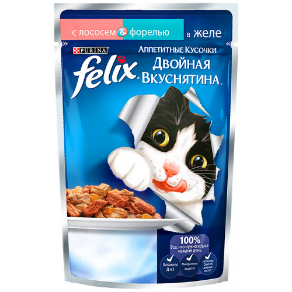
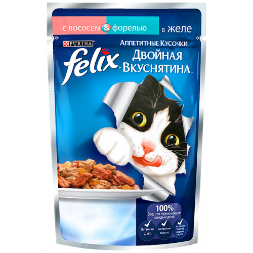

Обо мне кратенько
Меня звать Котом. Живу я на свете уже около 2,5 лет. Значусь царём и богов у своих рабов-хозяинов ( пусть это и абсурдно). Я люблю поесть, поспать, посмотреть на птичек за окном и поиграть с резиночками. Иногда я их краду и прячу от К. И она пока меня не рассекретила! Вот такой я удалец.
Написать мне7 интересных фактов
- Ем только лучшую еду ( подробнее в части "Что я ем").
- Сплю только с хозяином или на мягчайшей постилке, коих у меня 8 штук.
- Я полосатый.
- И усатый.
- Могу поточить когти о кресло
- Хожу и мяукаю. Просто так.
- Я как и хозяин немножко рыжий.
 
